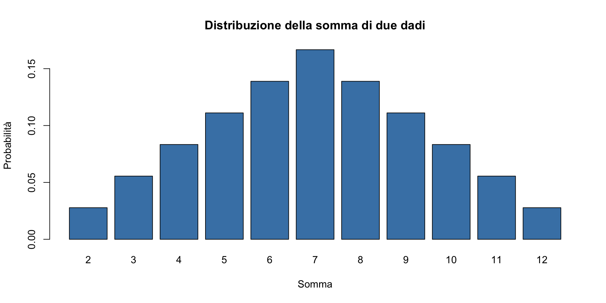
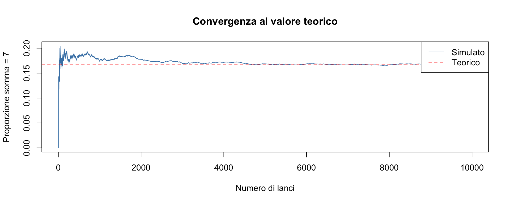
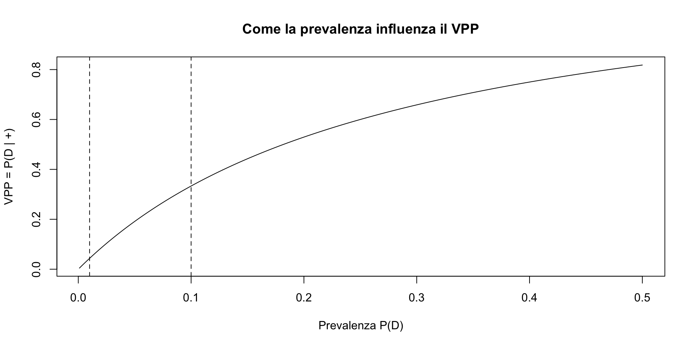

Esercitazione pratica – Probabilità (segmento 2)
Simulazioni e problemi in R
![]()
29 ottobre 2026
Obiettivi
In questo segmento useremo R per:
- costruire spazi campionari completi;
- simulare esperimenti (metodo Monte Carlo);
- verificare i calcoli fatti a mano;
- visualizzare distribuzioni di probabilità.
Riferimento: https://ccaudek.github.io/utet-prob/ — Capitoli 1-8
Regola didattica
Ogni riga di codice deve corrispondere a un’idea probabilistica chiara.
Struttura: Per ogni esercizio:
- Problema e domande (2 minuti)
- Provate voi (5 minuti)
- Soluzione commentata
Funzioni R chiave
| Funzione | Uso |
|---|---|
expand.grid() |
Crea tutte le combinazioni |
combn(n, k) |
Genera combinazioni |
factorial(n) |
Calcola \(n!\) |
choose(n, k) |
Calcola \(\binom{n}{k}\) |
sample() |
Estrae campioni casuali |
replicate() |
Ripete simulazioni |
Esercizio 1 — Spazio campionario: due dadi
Problema: Costruisci lo spazio campionario del lancio di due dadi e calcola la distribuzione della somma.
Domande:
- Quanti esiti sono possibili?
- Qual è \(P(\text{somma} = 7)\)?
- Qual è la somma più probabile?
(5 minuti)
Soluzione 1a — Costruire lo spazio
Risultato: 36 esiti possibili (\(6 \times 6\)).
Soluzione 1b — Calcolare la somma
Usiamo la sintassi generale:
Come si legge:
df$variabile == valorecrea una condizione logica (TRUE / FALSE);df[ … , ]seleziona solo le righe per cui la condizione è vera;- la virgola
,indica che teniamo tutte le colonne.
Nel caso presente:
Dado1 Dado2 Somma
6 6 1 7
11 5 2 7
16 4 3 7
21 3 4 7
26 2 5 7
31 1 6 7Interpretazione:
stiamo “tenendo” solo gli esiti dello spazio campionario in cui la variabile Somma vale 7.
In altre parole: filtriamo il data frame per una condizione.
Lo stesso risultato può essere ottenuto mediante la funzione dplyt::filter():
Soluzione 1b — Probabilità
Soluzione 1c — Distribuzione completa
La funzione table() costruisce la distribuzione di frequenza di una variabile discreta. Restituisce, per ogni valore possibile, quante volte compare nei dati.
2 3 4 5 6 7 8 9 10 11 12
1 2 3 4 5 6 5 4 3 2 1 Interpretazione:
la tabella mostra quanti esiti producono ogni valore della somma.
Soluzione 1c — Probabilità per ogni somma
2 3 4 5 6 7 8 9 10 11 12
0.0278 0.0556 0.0833 0.1111 0.1389 0.1667 0.1389 0.1111 0.0833 0.0556 0.0278 La somma 7 è la più probabile (6/36 ≈ 0.167)
Visualizzazione
La funzione barplot() crea un grafico a barre, adatto a rappresentare variabili discrete come le probabilità.

Come leggere il grafico:
- ogni barra corrisponde a un valore possibile della somma;
- l’altezza della barra rappresenta la probabilità associata;
- le somme centrali sono più probabili delle somme estreme.
Mini–guida ai principali argomenti di barplot()
barplot(x)→ valori da rappresentare (qui: un vettore di probabilità);
main→ titolo del grafico;xlab,ylab→ etichette degli assi;
col→ colore delle barre.
Esercizio 2 — Simulazione Monte Carlo
Problema: Verifica la probabilità di somma 7 simulando 10,000 lanci di due dadi.
Domanda: Il risultato simulato è simile a 1/6?
(5 minuti)
Soluzione 2 — Simulazione
Soluzione 2 — Risultato
Convergenza al valore teorico
# Proporzione cumulativa
prop_cum <- cumsum(somme_sim == 7) / 1:n_sim
plot(prop_cum, type = "l", col = "steelblue",
xlab = "Numero di lanci", ylab = "Proporzione somma = 7",
main = "Convergenza al valore teorico")
abline(h = 1/6, col = "red", lty = 2)
legend("topright", c("Simulato", "Teorico"),
col = c("steelblue", "red"), lty = c(1, 2))
Esercizio 3 — Disposizioni
Problema:
hai 4 stimoli (A, B, C, D).
Vuoi presentarne 3 in sequenza, senza ripetizioni.
Domande:
- Quante sequenze diverse esistono?
- Elencale tutte.
- Verifica con la formula \(D_{4,3} = \frac{4!}{1!}\).
(5 minuti)
Soluzione 3a — Generare le disposizioni
Usiamo una funzione che implementa direttamente la definizione di disposizione.
👉 Ogni riga è una sequenza ordinata senza ripetizioni.
Soluzione 3b — Conteggio
Risultato: 24 disposizioni.
Soluzione 3c — Verifica con la formula
✔ Il conteggio coincide con la formula teorica.
Esercizio 4 — Combinazioni
Scenario:
Hai un questionario con 10 item. Per una versione breve ne scegli 3.
- Gli item scelti formano un set (l’ordine non conta):
\(\{2,5,7\} = \{7,2,5\}\)
Domande:
- Quanti set diversi sono possibili?
- Elenca i primi 10 set
- Se tutti i set sono equiprobabili, qual è \(P(\text{un set specifico})\)?
(5 minuti)
Soluzione 4a — Generare i set di 3 item
Item1 Item2 Item3
1 1 2 3
2 1 2 4
3 1 2 5
4 1 2 6
5 1 2 7
6 1 2 8
7 1 2 9
8 1 2 10
9 1 3 4
10 1 3 5Interpretazione: ogni riga è un set di 3 item (l’ordine è irrilevante).
Soluzione 4b — Quante combinazioni?
Risultato: \(n_{\text{comb}} = 120\).
Soluzione 4c — Probabilità di un set specifico
Se tutte le combinazioni sono equiprobabili:
\[ P(\text{un set specifico}) = \frac{1}{120} \approx 0.0083 \]
(Verifica teorica: \(\binom{10}{3} = 120).\)
Esercizio 5 — Bayes con frequenze naturali
Problema: Considera 1 000 persone e un test diagnostico con:
- prevalenza \(P(D)=0.10\);
- sensibilità \(P(+\mid D)=0.90\);
- specificità \(P(-\mid \neg D)=0.80\).
Calcola:
- Quanti veri positivi e falsi positivi?
- \(P(D \mid +)\) (VPP).
- \(P(D \mid -)\).
(5 minuti)
Soluzione 5 — Costruiamo le frequenze (1 000 persone)
Soluzione 5 — Tabella 2×2
Qui stiamo usando numeri “su 1000”, così Bayes diventa un rapporto tra conteggi.
Soluzione 5 — Calcoliamo le posteriori
P_D_given_pos P_D_given_neg
0.33333333 0.01369863 Verifica: \(P(D \mid +)\approx 0.33\).
Interpretazione (in una riga)
- Tra i positivi, circa 1 su 3 ha davvero il disturbo.
- Tra i negativi, la probabilità di disturbo scende a circa 1.4%.
Nota
- Il problema si riduce a un conteggio: niente “magia” della formula.
- R serve solo a:
- costruire la tabella 2×2;
- fare divisioni trasparenti.
Esercizio 6 — Effetto della prevalenza
Domanda:
Cosa succede a \(P(D\mid +)\) se la prevalenza passa da 10% a 1%?
(5 minuti)
Soluzione 6
[1] 0.04347826Interpretazione: con prevalenza più bassa, i positivi includono molti più falsi positivi → il VPP cala.
Confronto
Prevalenza 10% → P(D|+) = 0.333 Prevalenza 1% → P(D|+) = 0.043 Messaggio chiave: il VPP dipende fortemente dalla prevalenza.
Esercizio 7 — Funzione personalizzata
Problema:
crea una funzione bayes_test() che calcola \(P(D \mid +)\) dati prevalenza, sensibilità e specificità.
(5 minuti)
Soluzione 7
[1] 0.3333333[1] 0.04347826Esercizio 8 — Visualizzare l’effetto della prevalenza
Problema:
usa bayes_test() per visualizzare come \(P(D \mid +)\) cambia al variare della prevalenza (con sensibilità e specificità fisse).
(5 minuti)
Soluzione 8

Lettura: a parità di test, quando la prevalenza è bassa il VPP resta basso.
Esercizio 9 — Aggiornamento sequenziale (due test)
Problema:
- un paziente ha probabilità iniziale \(P(D)=0.05\);
- un test ha sensibilità 0.90 e specificità 0.95.
Assumi che i due test siano indipendenti condizionatamente a \(D\) (e quindi l’evidenza si accumula).
Domanda:
- dopo due test positivi, qual è \(P(D \mid +,+)\)?
- dopo tre test positivi, qual è \(P(D \mid +,+,+)\)?
(5 minuti)
Soluzione 9 — Posterior → nuova prior
Prior Dopo 1° + Dopo 2° +
0.0500000 0.4864865 0.9446064 Interpretazione: ogni test positivo aggiorna iterativamente la nostra credenza (probabilità a priori), trasformando la distribuzione di probabilità a posteriori nella nuova a priori per il test successivo.
Soluzione 9 — Posterior → nuova prior (3° test)
Prior Dopo 1° + Dopo 2° + Dopo 3° +
0.0500000 0.4864865 0.9446064 0.9967527 Una maggiore quantità di evidenza concordante implica un incremento rapido di \(P(D)\) nel processo di aggiornamento bayesiano.
Riepilogo — Le funzioni R usate
In questa esercitazione abbiamo usato R come supporto concettuale, non come strumento di simulazione complessa.
Costruzione di frequenze e tabelle
matrix()→ costruire tabelle 2×2 a partire da contegginrow()→ contare casi / combinazionitable()→ distribuzioni di frequenza
Calcolo delle probabilità
- divisioni tra conteggi → probabilità condizionate
choose(n, k)→ numero di combinazionifactorial()→ verifica delle formule combinatorie
Funzioni personalizzate
bayes_test()→ implementare Bayes in modo trasparente
(una riga = una formula)
Visualizzazione
barplot()→ confrontare probabilità prima/dopo l’evidenzaplot()→ mostrare come il VPP dipende dalla prevalenza
Messaggio finale
Il teorema di Bayes non è una formula da applicare meccanicamente.
È un modo di ragionare:
- partire da ciò che sappiamo (prior),
- osservare nuova evidenza,
- aggiornare le nostre credenze in modo coerente.
Usare le frequenze naturali mostra che Bayes è, in fondo, un problema di conteggio e proporzioni.
In conclusione,
un test non “dice la verità”:
ci aiuta a ridurre l’incertezza, mai a eliminarla.
Cosa ricordare
- \(P(E\mid H) \neq P(H\mid E)\).
- Il VPP dipende fortemente dalla prevalenza.
- Le evidenze indipendenti si accumulano.
- L’aggiornamento bayesiano risulta più chiaro se si pensa in termini di frequenze.
Per approfondire
- https://ccaudek.github.io/utet-prob/ — Tutto il materiale del corso